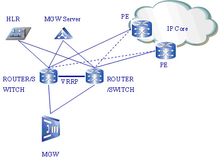

Un gateway (dall'inglese, portone, passaggio) è un dispositivo di rete che opera al livello di rete e superiori del modello ISO/OSI. Il suo scopo principale è quello di veicolare i pacchetti di rete all'esterno di una rete locale